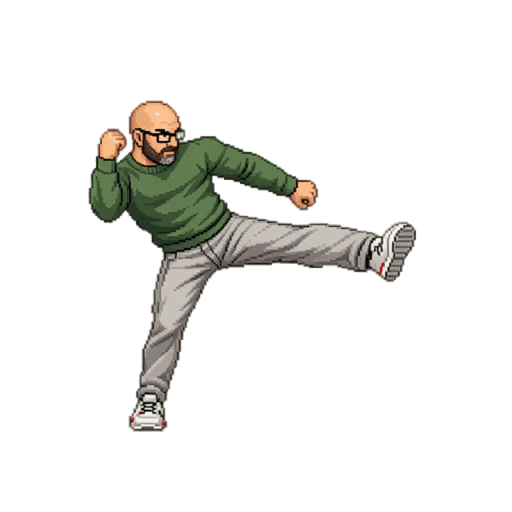
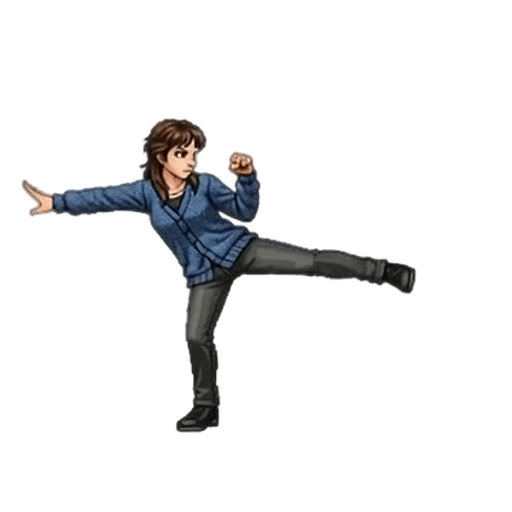
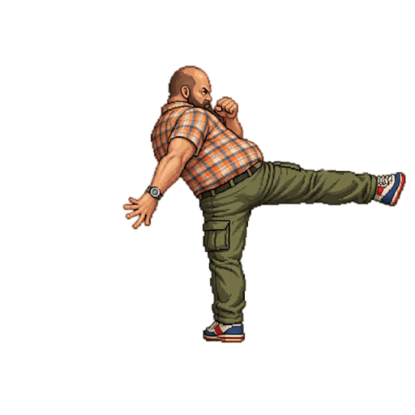
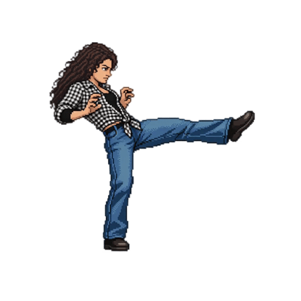
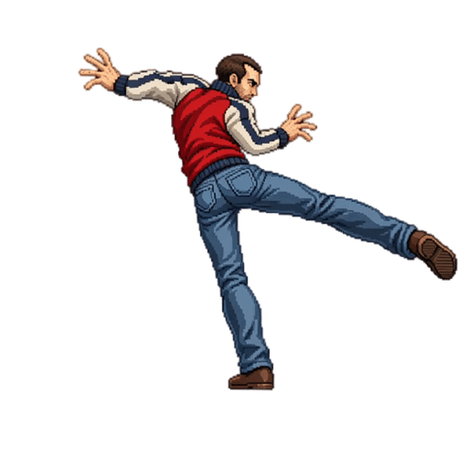
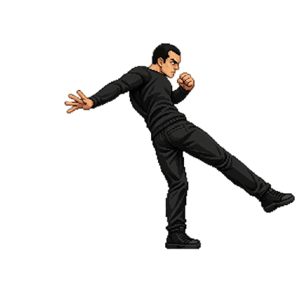
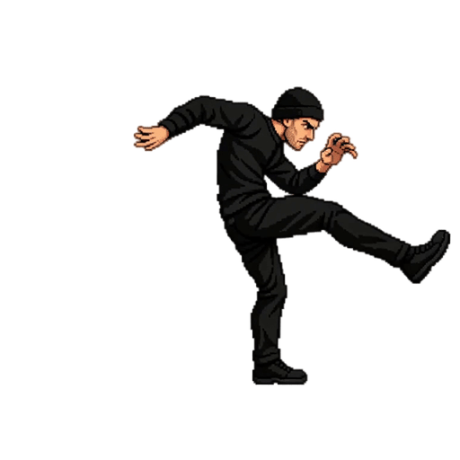
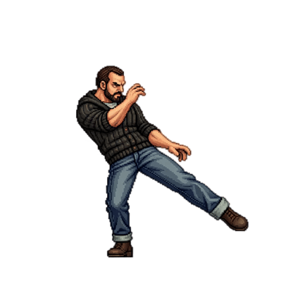
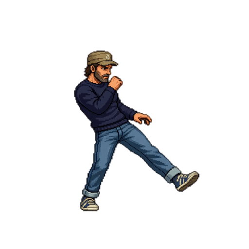

Timing Calcio leggero
Aggiornamento: 2026-11-19. Integrati 9 personaggi. Il frame selezionato di massima estensione inizia a 300 ms (0,3 s) e il ciclo completo dura 600 ms (0,6 s) a velocità 1x.
Preparazione: 300 ms. Fase di impatto/recupero: 300 ms. Le durate dei fotogrammi variano nelle due fasi per sincronizzare le pose. Quando la gamba resta estesa per più fotogrammi, il marcatore identifica una posa rappresentativa del tratto di massima estensione: le pose adiacenti possono essere simili.
Fonti: Light Kick Pro per 1 personaggi, riprodotti solo avanti con recupero incluso. Light kick avanti fino alla posa estesa e ritorno al contrario senza duplicare il vertice: ALBERTO (17 frame selezionati, 33 complessivi); FABIO-CLARA (23 frame selezionati, 45 complessivi); SBOZ (13 frame selezionati, 25 complessivi); PIPPO (16 frame selezionati, 31 complessivi); PEPPO (20 frame selezionati, 39 complessivi); Oscar (16 frame selezionati, 31 complessivi); FRA-TAVARONE (15 frame selezionati, 29 complessivi); MARSAN (13 frame selezionati, 25 complessivi). Ultime versioni salvate e intervalli selezionati su AutoSprite, celle 512×512 e scala conservate. Loop attivo per default e CRT condiviso. La prova Light Kick Storyboard di Sboz non è utilizzata.
Piede d’appoggio stabilizzato per FABIO-CLARA, PEPPO, Oscar, MARSAN. Ogni frame è traslato su coordinate intere per mantenere la suola sullo stesso punto, senza alterare i pixel o tagliare la posa. La posizione nel canvas è adattata per contenere il calcio completo. Offset e punti d’appoggio per Godot.
I frame della demo partono da 1 in tabella; gli indici sorgente partono da 0 nello sheet selezionato, anche quando già accorciato. FPS medio = numero di frame × 1000 / 600; le durate effettive sono negli atlas e nel catalogo, da trasferire anche in Godot.
| Personaggio | Posa scelta | Frame demo | Frame sorgente | Impatto | Preparazione / fase successiva | Totale | Durata frame prima / dopo | Provenienza e note |
|---|---|---|---|---|---|---|---|---|
| ALBERTO |  | 17 / 33 | 16 | 300 ms | 300 / 300 ms | 600 ms | 18.750 / 17.647 ms | cmwnpegkc00kw3ufq9v8hnh7aUltimo frame della posa estesa a 300 ms; recupero ottenuto invertendo la sequenza fino alla guardia. Le pose estese adiacenti iniziano prima del marcatore. |
| Elisa |  | 23 / 49 | 22 | 300 ms | 300 / 300 ms | 600 ms | 13.636 / 11.111 ms | cmwnmzvpv00et2n4i4a9bq3ex |
| FABIO-CLARA |  | 23 / 45 | 22 | 300 ms | 300 / 300 ms | 600 ms | 13.636 / 13.043 ms | cmwnplsga00egwo3r76jtw3xcUltimo frame della posa estesa a 300 ms; recupero ottenuto invertendo la sequenza fino alla guardia. Le pose estese adiacenti iniziano prima del marcatore. Piede d’appoggio stabilizzato tramite traslazioni intere dei frame, anche nel ritorno al contrario; nessun ridimensionamento o taglio. |
| FRA-TAVARONE |  | 15 / 29 | 14 | 300 ms | 300 / 300 ms | 600 ms | 21.429 / 20.000 ms | cmwnpoyrt00gwwo3rnue4dgr1Ultimo frame della posa estesa a 300 ms; recupero ottenuto invertendo la sequenza fino alla guardia. Le pose estese adiacenti iniziano prima del marcatore. |
| MARSAN |  | 13 / 25 | 12 | 300 ms | 300 / 300 ms | 600 ms | 25.000 / 23.077 ms | cmwnpsyx3000w84jnndqpwyn8Ultimo frame della posa estesa a 300 ms; recupero ottenuto invertendo la sequenza fino alla guardia. Le pose estese adiacenti iniziano prima del marcatore. Piede d’appoggio stabilizzato tramite traslazioni intere dei frame, anche nel ritorno al contrario; nessun ridimensionamento o taglio. |
| Oscar |  | 16 / 31 | 15 | 300 ms | 300 / 300 ms | 600 ms | 20.000 / 18.750 ms | cmwnp5x1f00ie3ufqqtw7yoreUltimo frame della posa estesa a 300 ms; recupero ottenuto invertendo la sequenza fino alla guardia. Le pose estese adiacenti iniziano prima del marcatore. Piede d’appoggio stabilizzato tramite traslazioni intere dei frame, anche nel ritorno al contrario; nessun ridimensionamento o taglio. |
| PEPPO |  | 20 / 39 | 19 | 300 ms | 300 / 300 ms | 600 ms | 15.789 / 15.000 ms | cmwnpxknt004f1191wfv0oaeyUltimo frame della posa estesa a 300 ms; recupero ottenuto invertendo la sequenza fino alla guardia. Le pose estese adiacenti iniziano prima del marcatore. Piede d’appoggio stabilizzato tramite traslazioni intere dei frame, anche nel ritorno al contrario; nessun ridimensionamento o taglio. |
| PIPPO |  | 16 / 31 | 15 | 300 ms | 300 / 300 ms | 600 ms | 20.000 / 18.750 ms | cmwnpvyxt00gpwdkaigl2vao0Ultimo frame della posa estesa a 300 ms; recupero ottenuto invertendo la sequenza fino alla guardia. Le pose estese adiacenti iniziano prima del marcatore. |
| SBOZ |  | 13 / 25 | 12 | 300 ms | 300 / 300 ms | 600 ms | 25.000 / 23.077 ms | cmwnq03ex0005lo7hkkrmaon1Ultimo frame della posa estesa a 300 ms; recupero ottenuto invertendo la sequenza fino alla guardia. Le pose estese adiacenti iniziano prima del marcatore. |